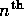
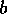
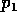
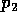
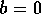
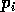

After the structure of the index the most important property of an indexed object is the description of the intrinsic symmetries among its indices. The symmetries relate permutations of the index to a canonical form, and the values of the components so related are either identical or differ by a sign (and may be complex conjugates as well). A complicated symmetry can reduce the number of independent components of an indexed object from hundreds to just a few, and since all the related components are so easily obtainable, only the canonical components need be stored. This greatly reduces the amount of storage required for an object, and also ensures that the symmetrically related components are in fact consistent with one another. The symmetries are also used to find a canonical form for any index applied to an indexed object, which allows some simplification and cancellation of expressions even before the components are examined.
The canonical form of an index is that which has the lowest ordered indices moved to the left as controlled by the symmetry. The ordering of indices is ``numeric-alpha'', i.e. numerical indices are ordered lower than alphabetic indices. This rule is altered when an index-element is being shifted (qv), in which case indices shifting up are moved left, and indices shifting down are moved right. See the examples below.
The symmetry description in REDTEN is in the form of a list of lists, each element of which describes a specific relation between blocks of the object indices (an ``independent'' symmetry). A ``block'' is defined as a group of adjacent index elements that move together under the influence of the symmetry. The location of the  index element is often called a ``slot'', because the index elements are ``dropped'' into it when using the symmetries.
Four kinds of symmetry relations are supported:
The list describing a single independent symmetry relation is of the form: ({c}    ...) or (h ...)
The first form is used to describe the first three kinds of symmetry relations, while the second describes the Hermitian symmetry.
In the first form, is the size of the block of indices that will be related by the symmetry. The sign of indicates whether the symmetry is positive or negative. If , then a trace symmetry is implied, but the block size is unity. The  are pointers, starting from 1, to the beginning of each block of size in the index. The optional flag 'c' (the literal character, in either upper- or lower-case) indicates that a conjugate is to be performed on odd permutations. Some examples follow.
The Hermitian symmetry is indicated by the second form (where 'h' is a literal character, in either upper- or lower-case), and can be applied only to spinor indices, which must come in adjacent unprimed and primed pairs (i.e. the index-types are 3 and 4). If no pointers are given, the system will construct a Hermitian symmetry for the entire index.